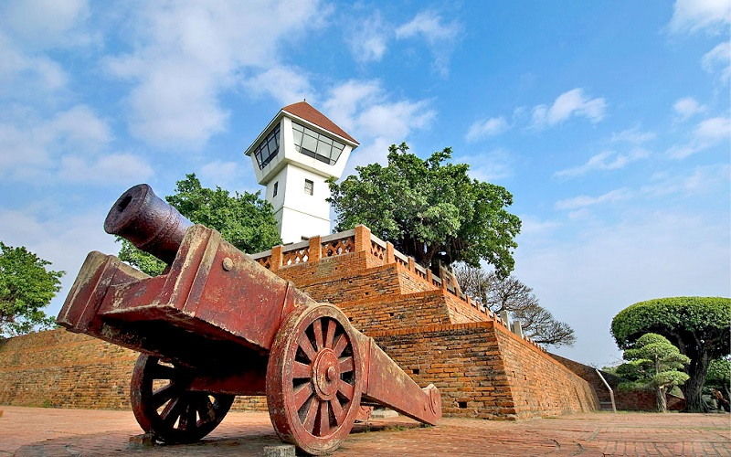
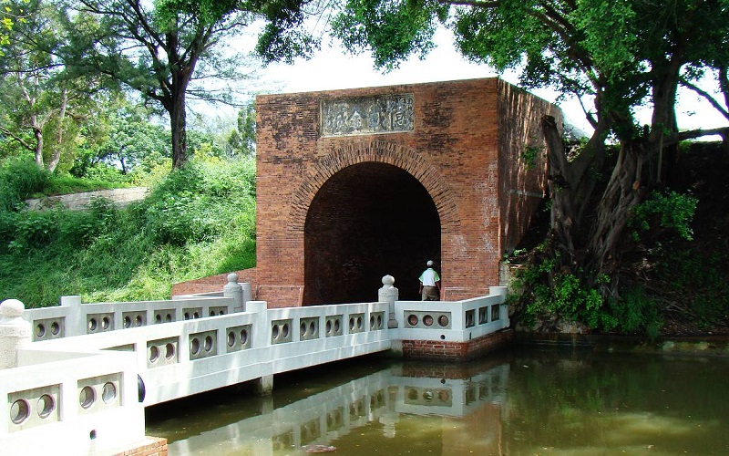
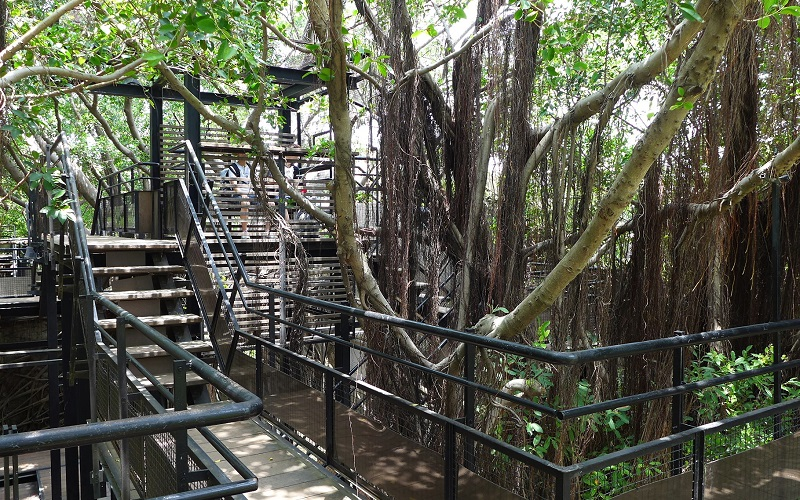
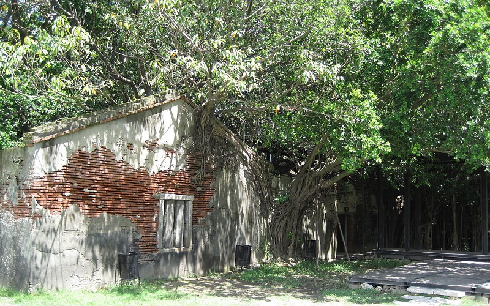
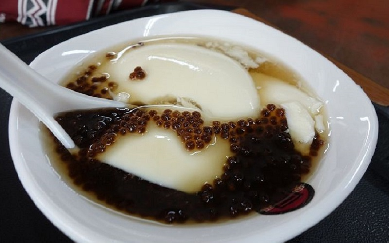
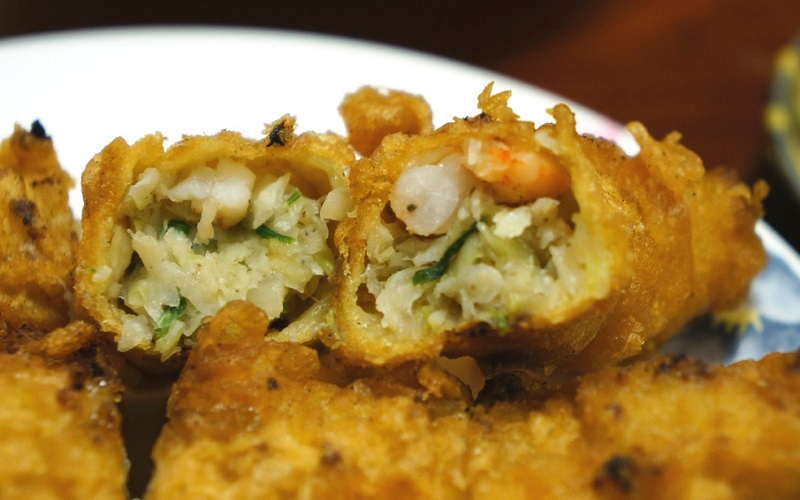

Anping
Tainan City
Fort Zeelandia
    Aping District can be view as the most historic area in Taiwan. The history of Anping dates back to the 17th century,
when the Dutch East India Company occupied a "high sandy down" called Tayouan and built Fort Zeelandia.
In the Qing Dynasty, the Eternal Golden Castle, served as a fort, was built to defend the island against Japanese invasions.
Nowadays, both the Fort Zeelandia and the Eternal Golden Castle are declared to be the National monuments.
Around this area are other special monuments such as Former Tait & Co. Merchant House and the Anping Tree House.
The Anping Old Street is also worth visiting. You can find a lot of delicious snacks such as the bean jelly
and the shrimp roll.
- Best seasons: all year around
- Transportation: Public bus service to the area is available from #2, #6, #10, #14.